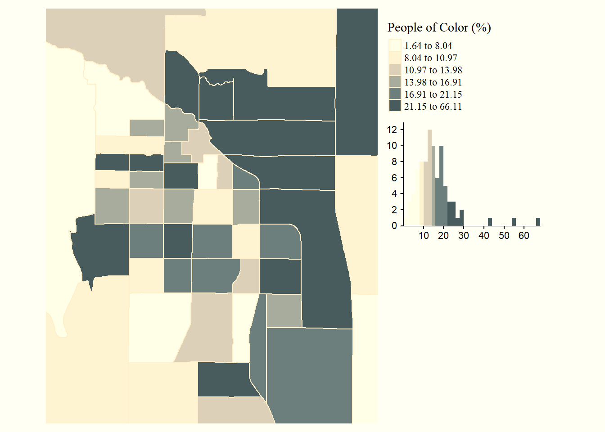

4 Exploratory Data Analysis
For this lesson you will be working with the same penguins data from last week. Start a new script for this week, and add/execute the following lines of code to set up your session:
library(tidyverse)
library(palmerpenguins)
data("penguins")When working with a new data set, often the first thing you do is perform some initial investigations on the data using various summary statistics and graphical representations. This is exploratory data analysis! Or for short, EDA. EDA is used to catch any potential errors, assess statistical assumptions, observe patterns and help form initial hypotheses of your data that you can then test with statistics.
For our penguins data, we want to start by exploring things like sample size, variation and distribution of our variables, and make initital comparisons among species, islands, and sex.
A new Base R function we have yet to use is summary(). This functions gives us a very quick snapshot of each variable in our dataset, where we can see things like sample size and summary statistics.
summary(penguins)For some more in depth EDA, the tidyverse packages provide many useful functions to summarize and visualize data. Today we are going to simultaneously learn about various functions of tidyverse packages while investigating and formulating hypotheses about our penguins data set.
4.1 Data wrangling
4.1.1 The dplyr package
dplyr is a Tidyverse package to handle most of your data exploration and manipulation tasks. Now that you have learned indexing in the Intro to R lesson, you may notice the first two dplyr functions we are going to learn, filter() and select() act as indexing functions, subsetting rows and columns based on specified names and/or conditions.
Subset rows with filter()
You can filter data in many ways using logical operators (>, >=, <, <=, != (not equal), and == (equal)), AND (&), OR (|), and NOT (!) operators, and other operations such as %in%, which returns everything that matches at least one of the values in a given vector, and is.na() and !is.na() to return all missing or all non-missing data.
# filter rows for just the Adelie species
filter(penguins, species == "Adelie")
# filter rows for all species EXCEPT Adelie
filter(penguins, species != "Adelie")
# filter islands Dream and Torgersen AND rows that DO NOT have missing values for bill length
filter(penguins, island %in% c("Dream", "Torgersen") & !is.na(bill_length_mm))Note: Tidyverse package functions take in column names without quotations.
Using dplyr functions will not manipulate the original data, so if you want to save the returned object you need to assign it to a new variable.
body_mass_filtered <- filter(penguins, body_mass_g > 4750 | body_mass_g < 3550)Subset columns with select()
select() has many helper functions you can use with it, such as starts_with(), ends_with(), contains() and many more that are very useful when dealing with large data sets. See ?select for more details
# Select two specific variables
select(penguins, species, sex)
# Select a range of variables
select(penguins, species:flipper_length_mm)
# Rename columns within select
select(penguins, genus = species, island)
# Select column variables that have 'mm' in their name
select(penguins, contains("mm"))Create new variables with mutate()
mutate() allows you to edit existing columns or create new columns in an existing data frame, and you can perform calculations on existing columns to return outputs in the new column. The syntax is the name of the new column you want to make (or the current column you want to edit) on the left of =, and then to the right is what you want to put in the new column. Note that mutate() works row wise on the data frame.
# New variable that calculates bill length in cm
mutate(penguins, bill_length_cm = bill_length_mm/10)
# mutate based on conditional statements with if_else()
mutate(penguins, species_sex = if_else(sex == 'male', paste0(species,"_m"), paste0(species, "_f")))Notice the use of paste0() here, and when we briefly used a similar function paste() in previous lessons. Explore the difference between these two. They are both very useful functions for pasting strings together.
All the above functions can all be used in conjunction with group_by(), which changes the scope of each function from operating on the entire data set to operating on it group-by-group. group_by() becomes even more powerful when used along with summarise() to calculate some specified summary statistic for each group. However, before we start using multiple operations in conjunction with one another, we need to talk about the pipe operator %>%.
4.1.1.1 The pipe %>%
The pipe, %>%, comes from the magrittr package by Stefan Milton Bache. Packages in the tidyverse load %>% for you automatically, so you don’t usually load magrittr explicitly. Pipes are a powerful tool for clearly expressing a sequence of multiple operations.
For example, the pipe operator can take this sequence of operations:
df1 <- filter(penguins, island == "Dream")
df2 <- mutate(df1, flipper_length_cm = flipper_length_mm/10)
df3 <- select(df2, species, year, flipper_length_cm)
print(df3)And turn it into this, removing the need to create intermediate variables
penguins %>%
filter(island == "Dream") %>%
mutate(flipper_length_cm = flipper_length_mm/10) %>%
select(species, year, flipper_length_cm)You can read it as a series of imperative statements: filter, then mutate, then select. A good way to pronounce %>% when reading code is “then”. It takes the output of the operation to the left of %>% and feeds it into the next function as the input.
So now back to group_by() and summarize(). Say you want to summarize data by some specified group, for example you want to find the average body mass for each species, this is how you could do that:
penguins %>%
group_by(species) %>%
summarise(body_mass_avg = mean(body_mass_g, na.rm = TRUE))You can also group by multiple variables. Say you want to calculate the sample size (i.e., count, which can be calculated with the n() function) for each species for each year of the study.
penguins %>%
group_by(species, year) %>%
summarise(n_observations = n())4.2 Visualization
An important part of data exploration includes visualizing the data to reveal patterns you can’t necessarily see from viewing a data frame of numbers. Here we are going to walk through a very quick introduction to ggplot2, using some code examples from the palmerpenguins R package tutorial: https://allisonhorst.github.io/palmerpenguins/articles/intro.html.
ggplot2 is perhaps the most popular data visualization package in the R language, and is also a part of the Tidyverse. One big difference about ggplot though is that it does not use the pipe %>% operator like we just learned, but instead threads together arguments with + signs (but you can pipe a data frame into the first ggplot() argument).
The general structure for ggplots follows the template below. Note that you can also specify the aes() parameters within ggplot() instead of your geom function, which you may see a lot of people do. The mappings include arguments such as the x and y variables from your data you want to use for the plot. The geom function is the type of plot you want to make, such as geom_point(), geom_bar(), etc, there are a lot to choose from.
# general structure of ggplot functions
ggplot(data = <DATA>) +
<GEOM_FUNCTION>(mapping = aes(<MAPPINGS>))Visualize variable distributions with geom_historgram()
If you plan on doing any statistical analysis on your data , one of the first things you are likely to do is explore the distribution of your variables. You can plot histograms with geom_histogram()
ggplot(penguins) +
geom_histogram(mapping = aes(x = flipper_length_mm))
This tells us there may be a lot of variation in flipper size among species. We can use the ‘fill =’ argument to color the bars by species, and scale_fill_manual() to specify the colors.
# Histogram example: flipper length by species
ggplot(penguins) +
geom_histogram(aes(x = flipper_length_mm, fill = species), alpha = 0.5, position = "identity") +
scale_fill_manual(values = c("darkorange","darkorchid","cyan4"))
Cool, now we can see there seems to be some pretty clear variation in flipper size among species. Another way to visualize across groups is with facet_wrap(), which will create a separate plot for each group, in this case species.
ggplot(penguins) +
geom_histogram(aes(x = flipper_length_mm, fill = species), alpha = 0.5, position = "identity") +
scale_fill_manual(values = c("darkorange","darkorchid","cyan4")) +
facet_wrap(~species)
Compare sample sizes with geom_bar()
We saw a quick snapshot of total sample size for each species with summary(). Let’s use ggplot to see sample size for each species on each island.
ggplot(penguins) +
geom_bar(mapping = aes(x = island, fill = species))
As you may have already noticed, the beauty about ggplot2 is there are a million ways you can customize your plots. This example builds on our simple bar plot:
ggplot(penguins, aes(x = island, fill = species)) +
geom_bar(alpha = 0.8) +
scale_fill_manual(values = c("darkorange","purple","cyan4"),
guide = FALSE) +
theme_minimal() +
facet_wrap(~species, ncol = 1) +
coord_flip()
This is important information, since we know now that not all species were sampled on every island, which will have complications for any comparisons we may want to make among islands.
Visualize variable relationships with geom_point()
We can use geom_point() to view the relationship between two continuous variables by specifying the x and y axes. Say we want to visualize the relationship between penguin body mass and flipper length and color the points by species:
ggplot(penguins) +
geom_point(mapping = aes(x = body_mass_g, y = flipper_length_mm, color = species))
4.2.1 Exercises
For each exercise, please include the line(s) of code you used to answer the question.
Reorder the variables in
penguinsso thatyearis the first column followed by the rest (Hint: look into the use ofeverything()). (5 pts.)Create a new column called ‘size_group’ where individuals with body mass greater than the overall average are called ‘large’ and those smaller are called ‘small’. (Note: this answer requires the additional use of both the
if_else()andmean()functions. Remember how to deal withNAvalues inmean()). (5 pts.)Which year had the largest average weight of all individuals according to body mass. (5 pts.)
You want to filter data for years that are not in a vector of given years, but this code doesn’t work. Tweak it so that it does. (5 pts.)
penguins %>% filter(year !%in% c(2008, 2009))Using the visualization techniques you learned today, create a figure that allows you to visualize some comparison of your choice among the
penguinsdata set. Along with embedding the figure you made, write a testable hypothesis about the data and the patterns you see from this figure. (5 pts.)